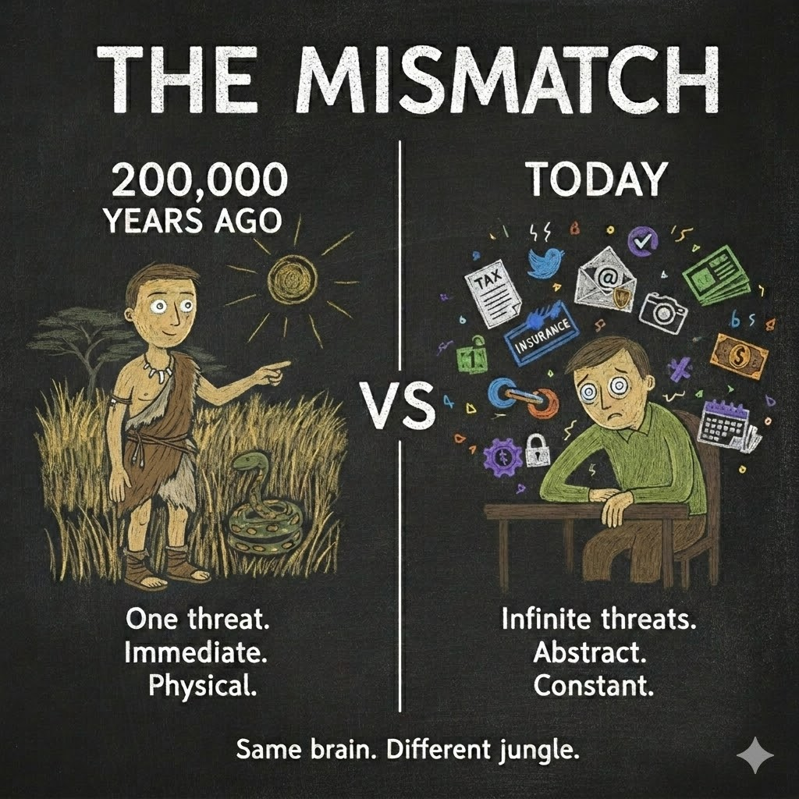
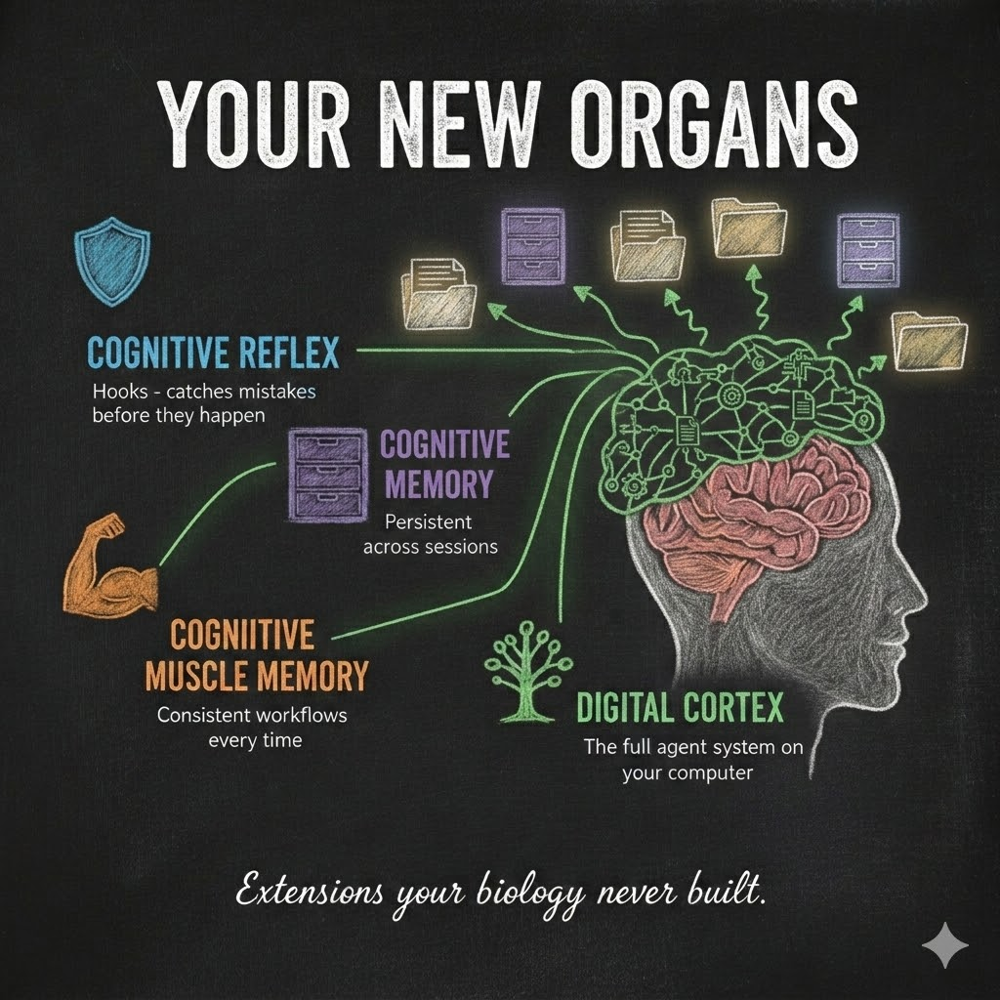
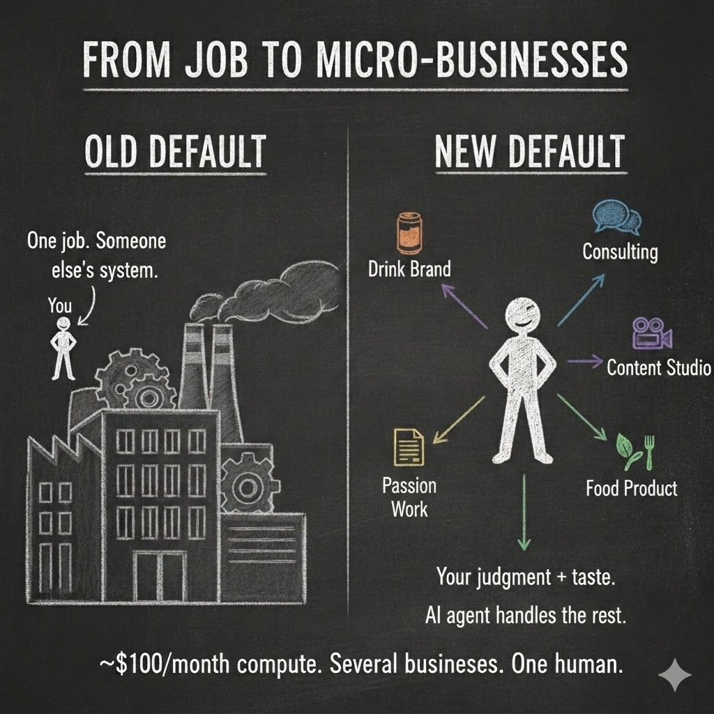

Your Brain Was Never Built for This
Your skull holds a brain optimized for spotting snakes in tall grass. You are asking it to run a business in a civilization of eight billion people connected by fiber optic cables.
That mismatch is the central design flaw of modern human life.
For roughly two hundred thousand years, the human brain was an extraordinary piece of engineering — tuned to the natural world. Small groups. Physical threats. Immediate feedback. A world where the most complex decision you faced was which path to take through the forest, and the most information you processed in a day fit inside a single conversation around a fire.
That brain still lives inside your head. Unchanged.
Twelve Thousand Years of Drift
About twelve thousand years ago, humans started settling. Agriculture. Villages. Then cities, governments, writing systems, legal codes, trade routes. The environment changed — fast by evolutionary standards, slow by human experience.
The organic brain adapted. Not biologically — there was no time for that — but culturally. We invented tools for the mind. Writing extended memory. Mathematics extended reasoning. Institutions extended trust beyond the tribe. And then the most powerful adaptation of all: specialization. One person heals, another builds, a third keeps the books. Professions were the first delegation — offloading what your brain could not master onto someone else’s brain that could.
We offloaded complexity onto systems outside the skull, and onto other skulls.
For most of those twelve thousand years, this worked. The complexity of human society grew, and the human brain — augmented by its cultural tools — kept pace. Barely. But it kept pace.
Then something happened.
The Last Thirty Years Broke the Balance
The internet did not just add complexity. It multiplied it.
Before 1995, the amount of information an average person encountered in a day was bounded by physical reality. A newspaper. A few conversations. Maybe a television broadcast. The world was complex, but it was filterable.
After 1995 — and especially after smartphones — the information environment exploded. The number of decisions, signals, obligations, and stimuli hitting a single human brain on a typical Tuesday in 2026 would have overwhelmed an entire village council in 1800.
And the slope is still steepening.
Look at what a “simple” modern life demands: taxes filed across multiple jurisdictions. Health insurance with hundreds of options. Retirement planning that requires predicting markets decades out. Digital privacy across dozens of platforms. Professional certifications that expire and renew. Children navigating social systems that change every semester.
The brain scanning for snakes in the grass is now drowning in a jungle of spreadsheets, compliance forms, and notification badges. It was never designed for this.

The Quiet Divide
Nobody talks about this part openly.
A small percentage of humans navigate this complexity well. They are not smarter — they are better at delegating. They have accountants, lawyers, financial advisors, personal assistants, therapists, nutritionists, and executive coaches. They outsource the complexity their brain cannot handle to other human brains that specialize.
That twelve-thousand-year-old invention — delegation through specialization — still works. But it has always been expensive.
A good accountant costs money. A good lawyer costs more. A personal assistant costs a salary. The difference between owning a brand and working for one has never been intelligence. It is infrastructure — the ability to delegate at scale.
Everyone else is doing their own taxes at midnight, missing deadlines, making suboptimal health decisions, and wondering why life feels like it is moving faster than they can think.
Because it is. Their organic brain is running software designed for the savanna, in an environment that requires a corporation.
The Digital Cortex
For twelve thousand years, delegation required hiring another human. A specialist. Someone whose brain filled the gaps yours could not. For the first time, that cost is collapsing.
Evolution gave us a brainstem — survival, breathing, reflexes. Millions of years of tuning. Then it gave us a cortex — language, planning, abstract thought. The thing that separates us from every other animal on Earth.
But evolution stopped there. It does not know about tax codes, or cryptocurrency, or the seventeen different privacy settings on your phone. The cortex that can write poetry and build bridges cannot keep up with the world it created.
So we build the next layer ourselves.
The digital cortex.
A CLI agent — a structured AI system that lives on your computer, reads your files, writes new ones, and organizes your work — is the first form of that layer. Not one giant program, but a complex system of many small parts interacting. Call it what it actually is: a digital cognitive organ.
That phrase is deliberate. An organ.
Your liver does not wait for instructions. It processes toxins continuously, silently, as part of your body’s background operations. Your immune system does not require a prompt. It monitors, detects, and responds — because that is what it was built to do.
A CLI agent does the same thing — for the complexities your organic brain was never shaped to handle. The snake detector trying to process tax law finally gets help.
A hook that watches your file system for sensitive data exposure? Cognitive reflex — a digital immune system catching what your organic attention missed.
A memory file that accumulates what your agent has learned about your project across sessions? Cognitive memory tissue — persistent knowledge your biological hippocampus would have discarded after sleep.
A skill that enforces a consistent workflow every time you start a new task? Cognitive muscle memory — reliable behavior your brain would improvise differently each time.
These are the organs of your digital cortex. Memory that persists across weeks. Reflexes that catch mistakes before they compound. Specialized reasoning that runs while you sleep. Your biology — now extended with organs designed for the actual jungle you live in.

Your .claude/ directory — or whatever your CLI agent calls its brain — is the first draft of that organ system. One you design. One you grow. One that is yours. In the essays that follow, we will see exactly what these organs look like — the files, the hooks, the jobs that make it function.
The World It Creates
For generations, the default economic relationship has been: you have a job. You trade your time and cognitive labor within someone else’s system. You are a component in their machine.
That made sense when delegation was expensive — when running a business required hiring the accountants, lawyers, logistics managers, and marketing teams that only a fraction of people could afford.
Watch what happens when it handles eighty to ninety percent of business operations.
You go to the supermarket and pay for someone else’s brand. What if you had your own? Pick the flavor. Choose the ingredients. Make it healthier. Someone buying your drink pays your salary. Every person a corporation.
Here is what that looks like. A human with the right cognitive organs can run a small canned-drink brand. The human decides on the flavor. The agent — one that grows from experience and improves its own architecture — writes the business plan, connects its human to a flavor chemist, researches food-grade manufacturers, manages regulatory paperwork, coordinates branding, and keeps the website running. Every contractor, every specialist, every logistics partner is still a human — but the agent is the connective tissue that holds the operation together. The human’s job is taste, judgment, and the relationships that matter. The agent’s job is everything in between.
That same human can simultaneously run a consulting practice, a content creation studio, and a local food product line. Not because they became superhuman. Because they grew the organs their biology was missing.
Now zoom out. The beverage industry generates tens of billions in annual revenue. Today, a handful of corporations capture most of it. But the barrier to running a drink brand was never manufacturing — contract manufacturers already produce white-label products for anyone who asks. The barrier was everything else: planning, regulatory compliance, branding, logistics, supplier coordination. That is operations. And operations is exactly what it absorbs.
The same logic applies to packaged snacks, media brands, consulting practices, local services. Each sector already has production and distribution infrastructure waiting to be used. What held individuals out was the cognitive overhead of running a business — the part your biology was never built to scale.
Remove that overhead and revenue disperses. Not because the market grows, but because more people can compete in it. A thirty-billion-dollar industry does not disappear. It distributes across more brand owners — each one bringing their own audience, their own human connection to the table.
And if running a business costs roughly one hundred dollars a month in compute — which is where the trend line points — then the economic default shifts. Not from job to a company. From job to several micro-businesses — each one managed by organs you designed, each one requiring only your judgment and creativity to thrive.

What Survives
Not all work looks the same on the other side.
Think about what a digital cortex absorbs well: routine transactions, document processing, scheduling, bookkeeping, regulatory compliance, data analysis, boilerplate communication. Work that follows rules. Work a human does not because they love it, but because the system demands it.
Now think about what it cannot absorb: the trial lawyer reading a jury’s body language. The therapist sensing what a client is not saying. The chef tasting a sauce and knowing it needs acid, not salt. The architect walking a site and feeling how light will move through a space in November. The teacher noticing that a quiet student is struggling before any test score confirms it.
Passion-based work survives. Work rooted in physical presence, emotional intelligence, sensory experience, and creative taste. The things evolution spent millions of years perfecting — finally freed from the overhead that buried them.
The work that requires a body, a heart, a sense of taste — stays human. And with the overhead removed, more humans get to do the work they were meant to do.
Now picture that world taking shape. It is 2035. You manage a small beverage brand, a consulting practice, and a content studio. In some you collaborate with other humans who bring their own agents to the table. In some you work alone — your agent handling everything between your creative decisions and the customer. Every person a brand of their own.
Sounds busy. It might actually be calmer. The digital cortex handles the noise. The human handles the signal.
But can the brain that evolved to track a few relationships in a small tribe manage even the transition? Not without help. And not just for business.
Your Personal Infrastructure
And it does not stop at business. Your digital life already runs on other companies’ software. Their email. Their social media. Their fitness tracking. Their storage. Their apps, their terms, their data.
But if you can build cognitive organs, you can build everything.
A personal super-app on your phone, built by your agent, collecting your own data. Your own fitness dashboard. Your own project tracker. Your own communication hub. Running on your hardware — a phone and a small cloud server — powered entirely by software your agent designed and maintains.
Look at the stack that makes this possible. Cloud hardware providers sell compute the way power companies sell electricity. LLM providers sell intelligence the way water utilities sell clean water. You do not build the power plant. You plug in. Your LLM bill arrives monthly, the same way your electric bill does. Your agent runs on intelligence piped to your machine, the same way your refrigerator runs on electricity piped to your house.
This is already happening — messily, the way all early infrastructure does. OpenClaw — an open-source autonomous agent — went from obscurity to hundreds of thousands of GitHub stars in weeks. Moltbook, a social network for AI agents, attracted massive attention before anyone could verify whether the numbers were real. Messy? Absolutely. But the signal underneath is clear: personalized agents running independently, forming their own ecosystems. Pair this with decentralized trust infrastructure and you have the early architecture for agent-driven commerce taking shape in real time.
Still relying on hardware companies for the silicon. Still paying for intelligence by the token. But the software layer — the part that decides what your data does, how your businesses run, what your agent builds next — entirely yours.
The Invisible Wall
There is a less comfortable part of this story.
Not everyone will build their digital cortex. Some will not see the need. Some will wait for someone else to do it for them. Some will dismiss it as hype, the way people dismissed the internet in 1995 or smartphones in 2007.
And a gap will open.
Not the loud, visible kind. Not rich versus poor in the way we usually mean. An invisible gap. Between people whose cognitive capacity matches the complexity of their environment, and people whose biology — still wired for a simpler world — is trying to navigate a civilization this complex alone.
The first group will run micro-businesses, manage their own data, navigate bureaucracy through cognitive reflexes, and make better decisions because it fills the gaps their biology cannot.
The second group will feel the world getting faster, more confusing, more demanding — without understanding why. The wall between them is not made of money or education. It is made of adoption.
But here is what makes this shift different from every one before it. Literacy required years of schooling. Electricity required infrastructure. The internet required learning an entirely new medium. This? You talk to it. You describe what you need, and it builds itself around your words. Adoption has never required less — because the tool does the work.
Every major technology shift has produced this bifurcation. Literacy reshaped societies over centuries. Electricity did it in decades. The internet did it in years. Each cycle shorter, each impact sharper, each divide more personal.
This one moves faster still. Not generations — years. The person who builds their digital cortex today gains compounding cognitive capability every week. The person who waits does not fall behind gradually. They fall behind at the speed the technology improves — which, in 2026, is very fast.
What This Means for You
You do not need to be a programmer. You do not need to understand neural networks or hold a computer science degree.
You need to recognize what is happening.
Your organic brain — that magnificent, two-hundred-thousand-year-old organ — was never designed for the world you live in. And the complexity is accelerating.
But you can grow. Not biologically. Digitally.
A CLI agent on your computer is an extension of you. Its memory is your memory. Its reflexes are your reflexes. Its skills compound, session after session, project after project.
The foundation is set. The agent is the filesystem. The architecture already exists. But before we build, we need to agree on the words. The next essay gives you every term that matters — so when we start constructing, nothing gets lost in translation.
The snake in the tall grass has been replaced by a civilization of eight billion minds connected at the speed of light. Your organic brain is the best thing evolution ever made.
It just needs a few more organs.
Essay 3 of 8 in the Hadosh Academy series on agent architecture.
Previous: “We Could Have Had AGI By Now” — what happens when you scale architecture instead of the model.
Next: “The Language of Agents” — every term you need, in one read.
Comments